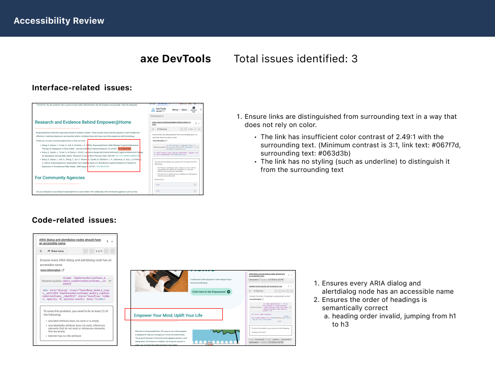
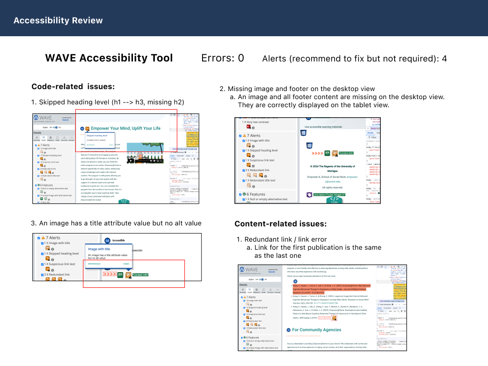
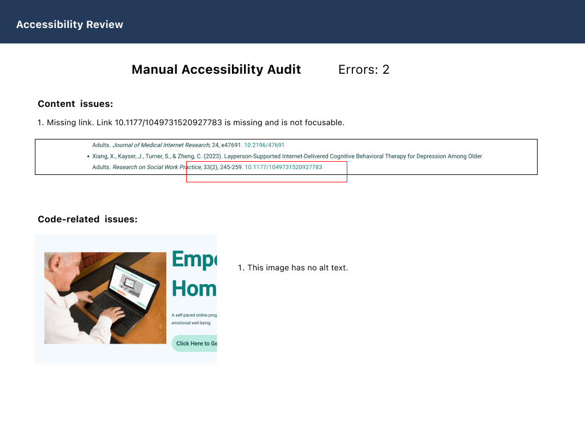
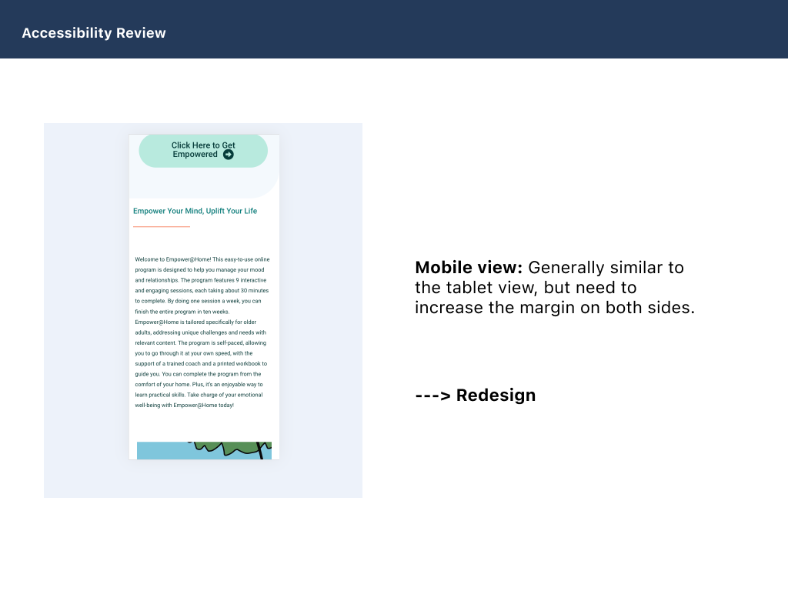
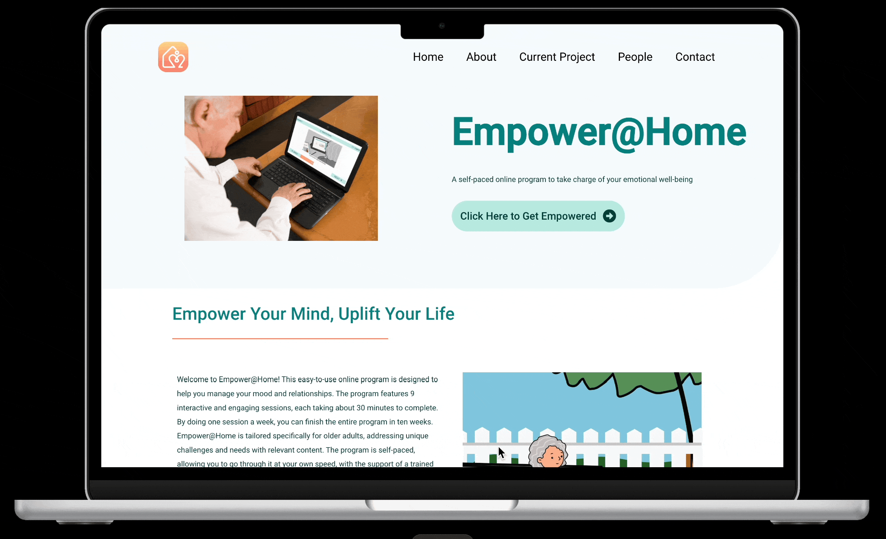
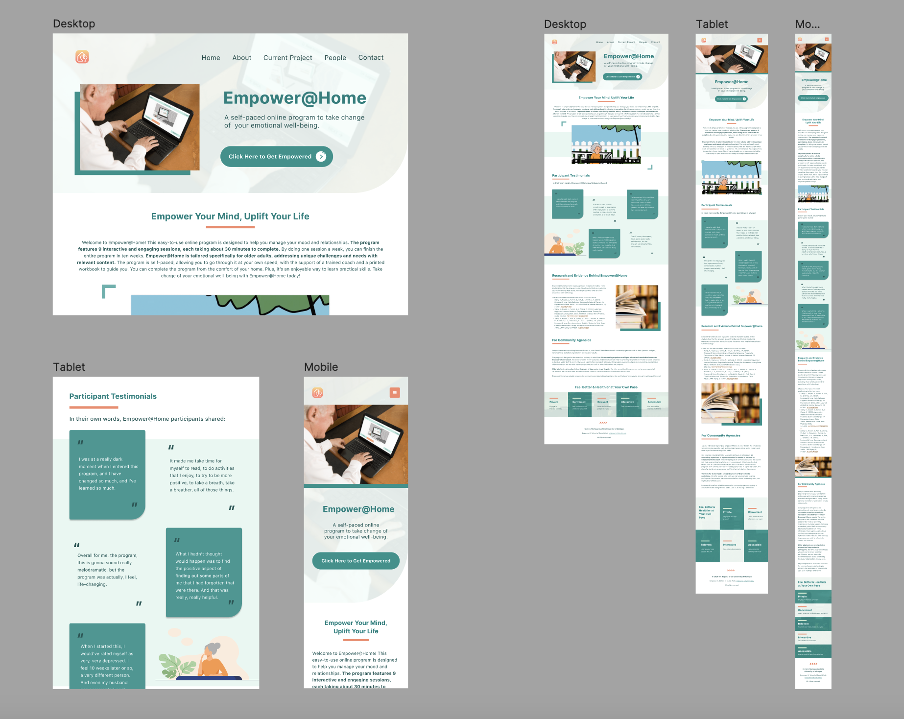

Website & Dashboard Overview
(Due to NDA restrictions, the non–public-ready dashboard design cannot be shown. The dashboard design above is only a mockup, while the website itself is public.)

scroll
Year: 2023 -2025 | Type: Internship/Part-time job | Role: Designer
Empower@Home is a self-paced online program to take charge of senior adults' emotional well-being. Along the way, users will also have the support of a printed workbook and a trained coach. I worked as a designer for redesigning the entire program's workbook and coaching guide book, redesigning the website as well as developing the online provider dashboard interfaces with programmers in the team.

The task is to redesign the current program's website. I first did an accessibility audit to the overall website to check for accessibility issues as the target audience of this program is senior adults. Issues like color contrast, font size, whether friendly or not for screen reader users need to be taken into considerations. Issues like missing links and missing alt text may not be obvious from the visual perspective, but they will heavily affect the experience of screen reader users. As a reuslt, I utitilized tools such as exe DevTools and WAVE, as well as manual check for accessibility issues that couldn't be identified by digital tools to ensure the website is not only visual appealing but also accessible.




While fixing these accessibility issues, I redesigned the entire website so the information could be more visualized and attracting to users.


The website after redesign is responsive. Users could view the website on either desktop, tablet and mobile phone with pleasing layout.

After finishing the design, I utilized WordPress to build the website. The new website is now published.
In addition to the website, users will have a 100-page workbook to record exercises they've taken and track their training process. We also have a corresponding guide version of the book for coaches to better prepare the exrcise content and the correct behaviors when interacting with seniors adults. Current version of these two book is out-dated and lack of interactivity. The overly compact content layout and excessive text also make it not entirely user-friendly. The main goal of this task is to update the content and improve its accessibility.

In the end, I completed the website and dashboard design. The updated workbook and coaching guide are also printed and ready for users. Over hundreds of users, we have 90% of participants successfully completed all 9 sessions of the training. 91% of them reported satisfaction with the program, while 75% of them believed that the program was likely to result in permanent improvement.